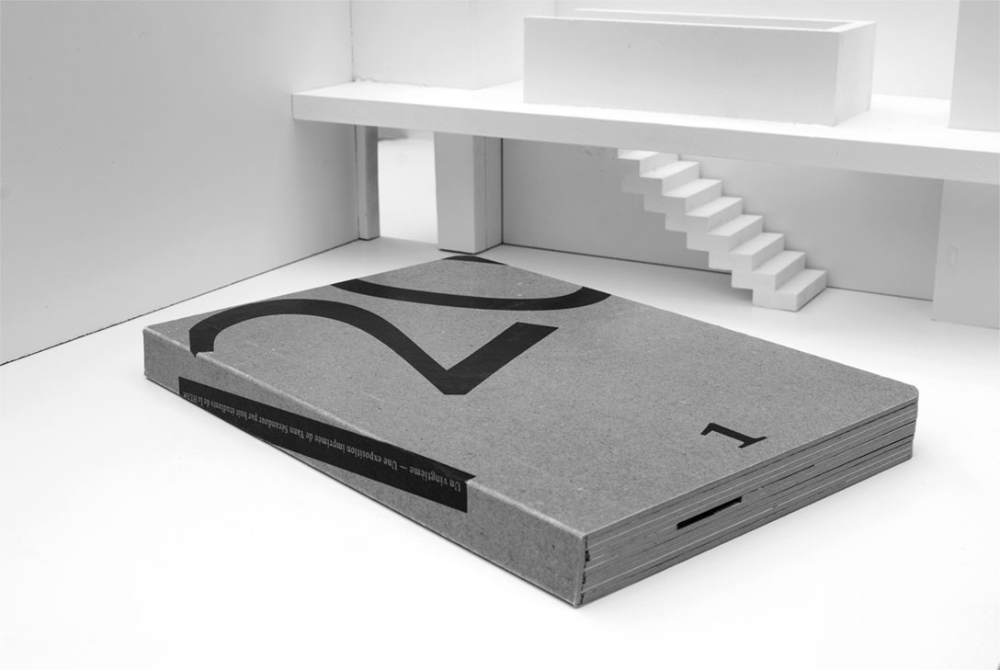
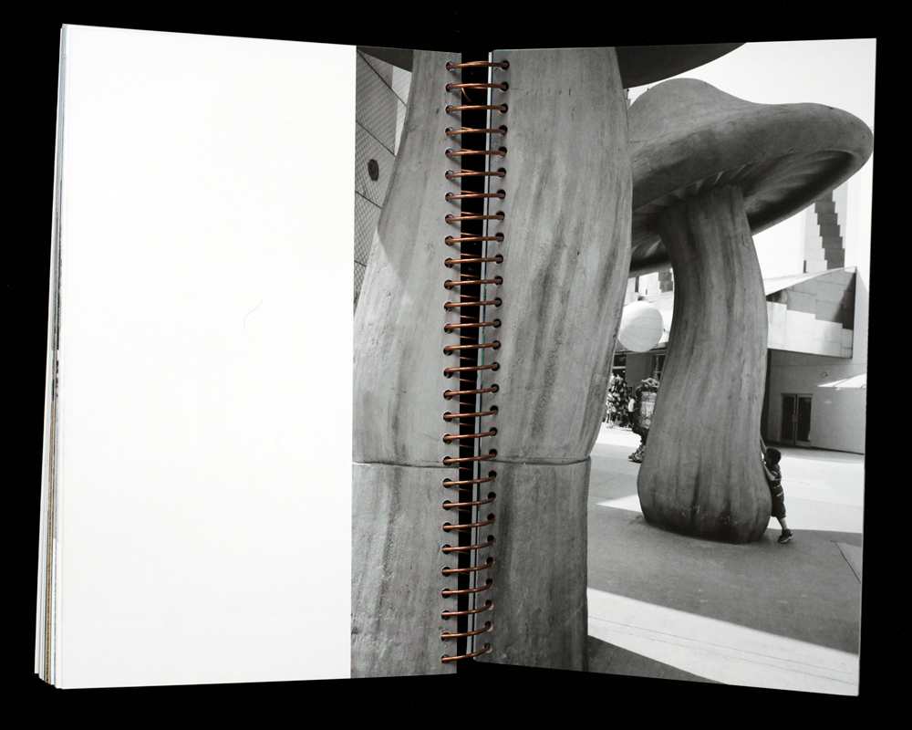
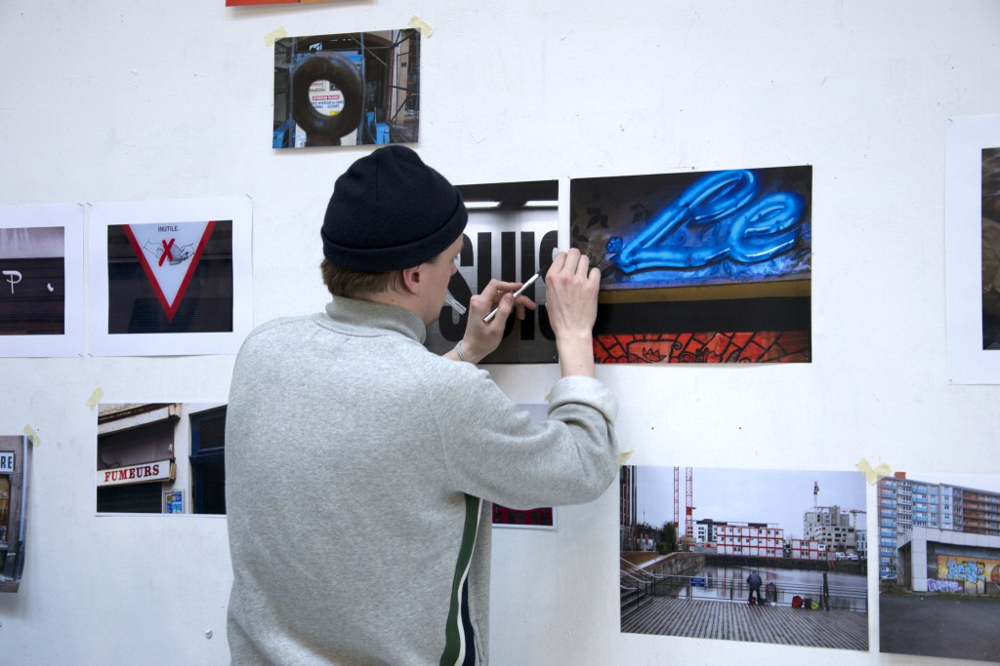
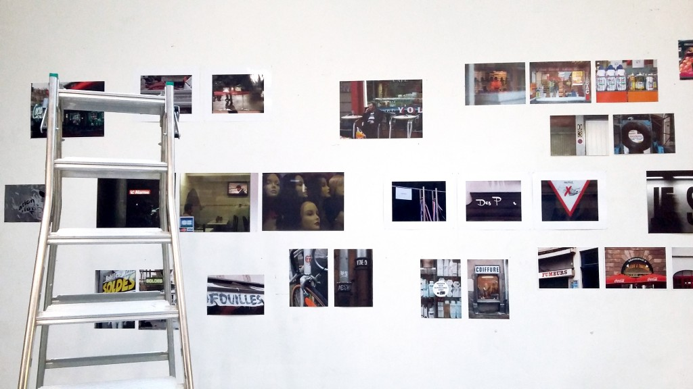
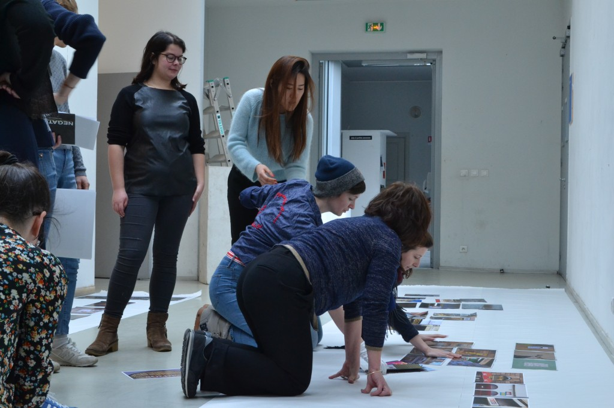

Sürkrüt
Blog de l'atelier communication graphique de la HEAR
À propos
Valider
Laboratoire
Ateliers
Expériences
Recherche
Workshop
Observatoire
Publications
Notes de lecture
Notes de voyage
Design interactif
Portrait d'anciens
Sürblog
    
2015 - 2016
2014 - 2015
2013 - 2014
2012 - 2013
2011 - 2012
Blogs de référence
Page Facebook
Sürkrürter
Blogs d’actualité
Le blog de Large
Many stuff
Pointypo
Revues en ligne
Design Observer
rosab
Strabic
Tombolo
Sites de revues et magazines
Eye Magazine
Blogs pédagogiques
Atelier de Didactique visuelle
Atelier de Scénographie
From—To
Great Scott !
Blogs de librairies
booklet library
Motto Berlin
Galeries d’images
Gurafiku
Autres blogs
Design is History
Design Matters
Ecogex/Delectable
Index graphik
Le dernier des blogs
Le tiers livre
Reading Forms
Type Radio
Typefoundry
Urbain trop urbain
Le cimetière des blogs
2 ou 3 choses…
ADW
Étienne Mineur archives
L'atelier des icônes
Le Journal de la Photographie